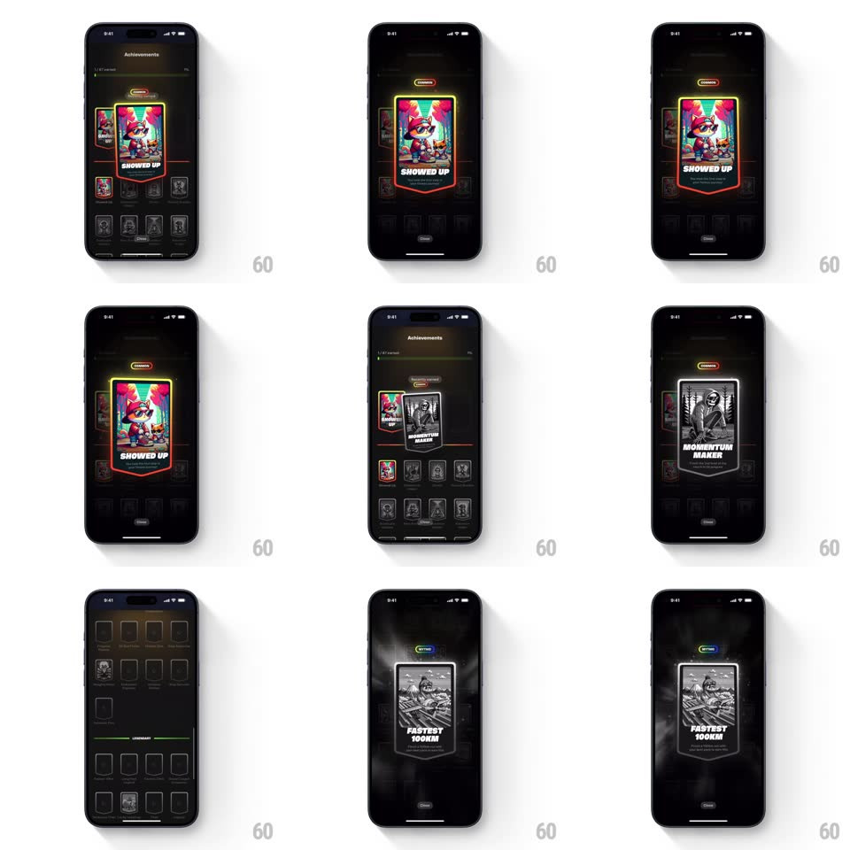

Media
Frame-by-frame

Rebuild this interaction 1:1: Supersonic's achievement detail - tap a badge card and it expands into a full modal trading card with a neon frame that tilts in 3D as you move the phone (gyroscope parallax).

Rebuild this interaction 1:1: Supersonic's achievement detail - tap a badge card and it expands into a full modal trading card with a neon frame that tilts in 3D as you move the phone (gyroscope parallax). ## Integration Integration: stack-agnostic spec - springs given as stiffness/damping, timed motions as duration + curve; map every value to your framework and animation library of choice. ## Scene A dark achievements grid of badge cards (earned ones in full color with glow, locked ones grayscale). Tapping one opens a modal: the card large at center - illustrated artwork, pennant shape, title like "SHOWED UP" or "FASTEST 100KM", a category tag above - over a dimmed smoky backdrop. ## Motion spec Pattern: card-expand modal + gyroscope tilt. - Tap: the card lifts from its grid slot and expands to modal size (bounds spring ~320/22, 500ms), the grid behind dimming (black to 70%) and blurring slightly. - The neon frame ignites after landing: the border glow sweeps around the card's edge (gradient stroke chase, 600ms) then idles with a slow pulse (glow radius +-4px, 2.5s). - Gyroscope tilt: the card rotates in 3D with device motion (max +-10deg X/Y, spring-smoothed ~200/18 so it lags and settles like a physical card); the artwork layers parallax at different depths (background 0.4x, character 1x, title 1.3x) and a specular highlight sweeps across the artwork opposite the tilt. - The title and tag beneath stay screen-aligned while the card body tilts, heightening the depth. - Locked cards open the same modal but desaturated, with no neon sweep - just a faint gray frame. - Dismiss (tap backdrop or drag down): the card shrinks back into its grid slot along the same path. ## Calibration - Tilt must feel weighty: heavy smoothing, no jitter, quick to rest when the phone stops. - Keep the tilt range modest - past 12deg the illusion breaks. ## Reduced motion No gyro tilt or parallax; the card glows statically. ## Don't miss - The pennant card shape (banner with a pointed bottom) is the identity - don't render plain rectangles. - Earned vs locked is color vs grayscale; there is no "locked" padlock chrome.